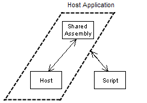

Passing custom type between the script and the host is a particular case of the "type sharing" pattern. The script and the host applications can pass run-time objects in both directions.

Because the script and the host need to pass (or access) objects of a custom type between each other this type has to be implemented in the common (shared) assembly.
Strictly speaking this scenario is not different to the described in the previous section ("Passing well-known type...") at all. In the "well-known" scenario the shared assembly were registered in GAC whereas for the "custom type" the shared assembly is just a local assembly.
Hosting the script engine with a shared local assembly is very simple from deployment point of view as no registration in GAC is required. Thus, deployment approach is just a simple XCOPY distribution. However, it introduces the following constraint when using some IDEs.
The same shared assembly that was used to compile the host application has to be loaded in all involved AppDomains at run-time.
The above statement sounds obvious, but some IDEs (e.g. VS7.1/8.0) load the copies of the referenced assemblies at run-time. Therefore some extra attention might be required. The problem may arise because the shared assembly for the script will be always loaded from the same directory where the script is, but IDE may force the host application to load a different copy of dll.
A simple way to overcome this problem is described in Image Processor tutorial . In this tutorial the host application is implemented in a single file which can be either compiled into executable (VS7.1 IDE) or executed as a script. In the both cases assembly confusion is avoided (even when using the same codebase).
As virtually there is no difference between passing/accessing the "well-known" and custom types all code samples from the previous topic are applicable. The only difference is that for the "custom type" examples the translators.dll would not be registered in GAC.
Simplified Hosting Model from another hand is a specific implementation of the "type sharing" pattern. When executing the script from the host application (according these simplified model) all the types implemented in the host assembly and in any of the dependency assemblies are automatically available/accessible from the script.

Simplified Hosting Model can be activated by setting CSScriptLibrary.CSScript.ShareHostRefAssemblies to true and it is active by default. In practice it means that you can access from the script even any public type implemented in the host without any extra effort. T
See Also
Reference | Tutorial (Image Processor)